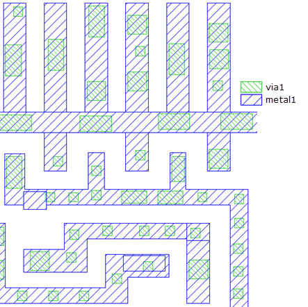

The Calibre
LSG via flow runs within Calibre nmDRC‑H from a Linux command line
with a via SVRF rule file.
Procedure
- Run Calibre nmDRC‑H with the following arguments
from a command line shell:
calibre -drc -hier -turbo number_of_processors via.svrf
This outputs the via
database containing the generated and randomly‑placed vias.
- (Post‑processing) Merge the via database with
the input layout database. For example, specify Calibre DESIGNrev
(or other layout viewer) with arguments from the command line:
calibredrv -a layout filemerge -in inputs/input.gds -in via_out.gds -exclude_layer layer_number_orig_via -out merged_out.gds
- (Post-processing) Run Calibre nmDRC‑H on the
merged layout database. For example:
calibre -drc -hier -turbo number_of_processors drc.rules
- Load and view the output database in Calibre
WORKbench (or other layout viewer). For example:
Figure 1. Calibre LSG Via Flow Merged Output